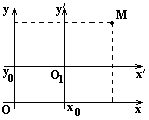
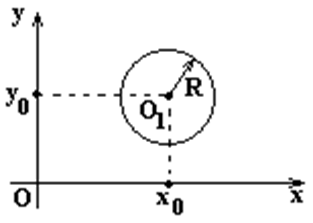

1. Параллельный перенос

Перенесём начало координат из точки в точку параллельным
переносом осей. Пусть в системе координат  точка
точка
 имеет координаты
имеет координаты  и
и  .
Система координат получена из системы
координат параллельным переносом осей, при
котором начало координат имеет координаты
.
Система координат получена из системы
координат параллельным переносом осей, при
котором начало координат имеет координаты  и в
системе координат . Точка в системе координат имеет координаты и
и в
системе координат . Точка в системе координат имеет координаты и  .
Связь между координатами точки
.
Связь между координатами точки  и точки в старой и новой системах координат
задается формулами:
и точки в старой и новой системах координат
задается формулами:
точка
имеет координаты и .
Система координат получена из системы
координат параллельным переносом осей, при
котором начало координат имеет координаты и в
системе координат . Точка в системе координат имеет координаты и .
Связь между координатами точки и точки в старой и новой системах координат
задается формулами:
Параллельный
перенос. Выражение координат точки M(x,y) в старой системе
координат через координаты точки M(x¢,y¢) в
новой системе координат.
(1)
Параллельный
перенос. Выражение координат точки M(x¢,y¢) в
новой системе координат через координаты точки M(x,¢) в старой системе координат.
(2)
Уравнения кривых второго порядка, когда их центры
симметрии находятся в точке с координатами
Уравнение окружности
с центром в точке O1(x0,y0)
и радиусом R
,
получаются с помощью преобразования координат при параллельном переносе осей
(2).
Уравнение окружности
с центром в точке O1(x0,y0)
и радиусом R
– уравнение окружности с
центром в точке и радиусом  .
.
.
Аналогично получаются уравнения других кривых второго
порядка:
Уравнения эллипса и
гиперболы с центром симметрии в точке O1(x0,y0)
–
уравнения эллипса и гиперболы с центром симметрии в точке ;
Уравнение параболы с
вершиной в точке O1(x0,y0)
–
уравнение параболы с вершиной в точке .
При этом, например, уравнения директрис эллипса и
гиперболы:
Уравнения директрис
эллипса и гиперболы при параллельном переносе
,
а параболы:
Уравнение директрисы
параболы при параллельном переносе
.
Аналогично преобразуются и уравнения асимптот гиперболы:
Уравнения асимптот гиперболы
при параллельном переносе
.